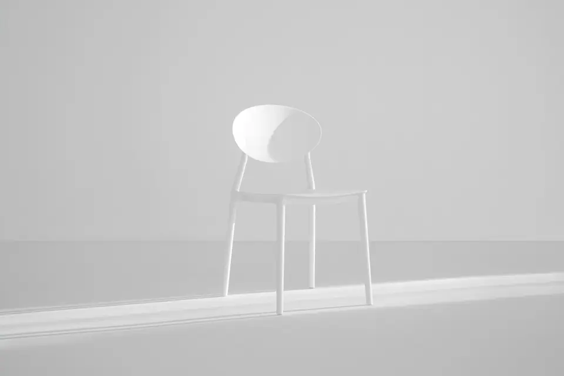
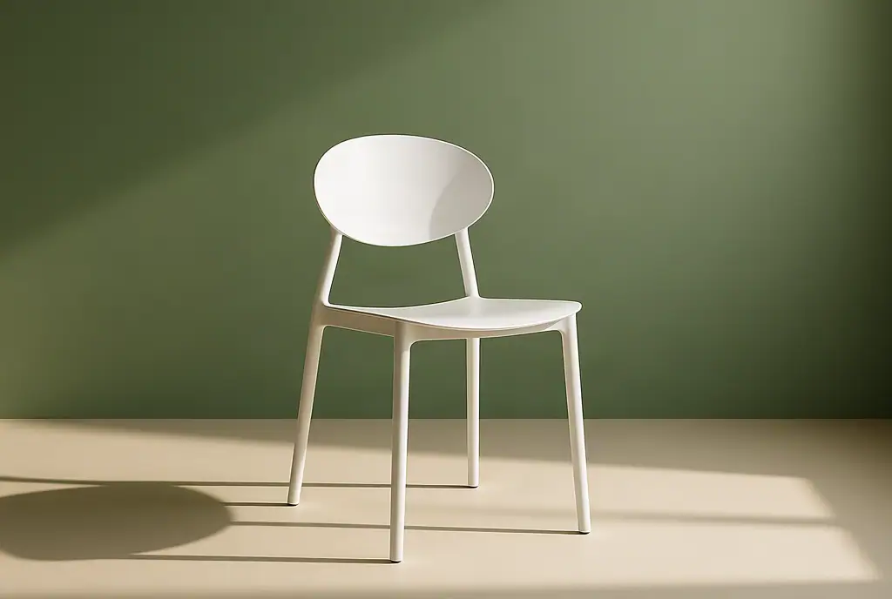

Name one change
Specify the object, surface, background or lighting to edit. Start with one task so you can see which instruction worked.
Free prompt builder · no signup
Describe what should change, what must stay, and how the result should look. Copy the prompt into your image-to-image editor.
This tool builds text in your browser. It does not generate images or upload photos.
Your starting prompt
Copy first, then paste into your chosen editor. These are instruction templates, not tested guarantees. A generative edit can change details you asked to preserve.
The linked editor is operated by this guide’s author. It accepts photo uploads without an account. Read about its free trial, one-time prices and edit balance.
Specify the object, surface, background or lighting to edit. Start with one task so you can see which instruction worked.
Name the shape, material, layout, text or camera angle that matters. “Keep everything” is harder to inspect than a concrete list.
Compare each preservation instruction with the original. A plausible-looking result can still change a product or a room.
One request · one output
We used the chair prompt above in the Image to Image editor with its Studio photo preset on October 10, 2026. These are the actual input and AI output, resized for display. This is an operator-produced example.


The backdrop and lighting changed as requested. The framing, seat edge and leg details also changed, despite the preservation instruction. Use this as a scene concept, and check the real product before publishing a catalogue image.
Original photo: Ellen Qin on Unsplash, under the Unsplash License. The generated output is not original photography. Read the full prompt and preset notes.
If the product must remain pixel-for-pixel identical, a conventional cutout and background editor is a better fit than a generative replacement.
This prompt builder is free and works locally. To generate an image, paste the prompt into an editor and upload a photo you have permission to edit. The linked Image to Image editor is operated by this guide’s author and processes uploads on its servers.
No account is required at imagetoimage.dev. Upload a JPG, PNG or WebP, enter a prompt, compare the reviewed output with the original, and download it. A generative edit can change product details, so check labels, shape and proportions before use.
The editor offers one free trial edit per day, subject to service capacity and content review. One-time packs cost US$0.99 for 5 edits or US$14.99 for 100 edits, before applicable checkout taxes. There is no subscription or automatic renewal. One request uses one edit; output is up to 1024 pixels on the longest side.
Keep the browser cookie used for the purchase and your payment receipt. Purchases do not create a login account, and another browser or cleared cookies may not show the balance. For missing credits or recovery, contact liubrain39@gmail.com with the receipt; do not send card details.
Check the editor’s current prices and trial availability before purchasing. For product backgrounds that must preserve exact pixels, use a conventional cutout workflow instead of a generative scene replacement.
No. The chair example shows that clear instructions can still change the subject. Inspect the actual result, especially product text, edges and repeated patterns.
Use an image-to-image editor that accepts an existing photo and a text instruction. The templates are general starting points. The linked Image to Image editor is one option and is operated by this guide’s author.
No. Only the chair example shown here has a documented input and actual output. The other task templates are suggested starting instructions and have not been presented as tested results.
The builder assembles text locally in your browser. This page has no image upload, generation API or analytics script. Do not put confidential information into prompts you later submit to an external editor.
The linked service prohibits deepfakes, face swapping, face replacement, facial reenactment and impersonation. It also prohibits pornography/NSFW, violence/gore, hate speech, child-unsafe content/CSAM and copyright or trademark infringement. Use only images you have permission to edit. See its content standards.